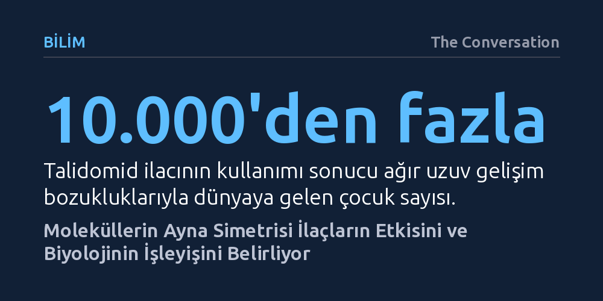

BILIM · The Conversation · 2026-10-09
Birbirinin ayna görüntüsü olan moleküller, vücutta zıt biyolojik etkiler yaratarak hayat kurtaran bir tedaviye veya ağır hasarlara yol açabiliyor. 2026 Nobel Kimya Ödülü'ne konu olan bu asimetri, ilaç tasarımından kuantum elektroniğine kadar kimyanın yönünü tayin ediyor.
Aynı kimyasal formüle sahip iki molekülün yalnızca uzaydaki yönelim farkının, bir maddeyi şifalı bir ilaç ile ölümcül bir zehir arasında ayırabildiğini gösteriyor.

İki elinizi avuç içleriniz yukarı bakacak şekilde uzattığınızda birbirlerinin kusursuz birer ayna görüntüsü olduğunu görürsünüz. Fakat nasıl çevirirseniz çevirin, sağ elinizi avuç içi aynı yöne bakacak biçimde sol elinizin üzerine tam olarak oturtamazsınız. Geometride ve kimyada üst üste bindirilemeyen bu ayna simetrisine kiralite denir. Çekiç gibi simetrik bir alet hem sağ hem sol elle aynı işi görürken, sağ ele göre tasarlanmış bir makas sol elle kullanıldığında bıçakları birbirine bastırmak yerine birbirinden uzaklaştırır ve kağıdı kesmek yerine büker.
Benzer bir el uyumu mikroskobik dünyada da geçerlidir. Yeryüzündeki neredeyse tüm proteinler amino asitlerin yalnızca tek bir ayna formundan, DNA ve RNA ise şekerlerin tek bir el yönünden inşa edilmiştir. Canlılığın iki simetrik seçenek arasından istisnasız tek bir yönü benimsemiş olmasına homokiralite adı verilir. Biyolojik varlığımızın temel taşları bu tek elli mimari üzerinde yükselir.
Kimyacılar laboratuvarda dışarıdan kiral bir yönlendirici eklemeden kiral moleküller sentezlediklerinde, iki ayna görüntüsünün eşit oranda bulunduğu yüzde 50'ye 50'lik rasemik bir karışım elde ederler. Bu durum bilim dünyasını uzun süre temel bir soruyla baş başa bıraktı: İlk canlılığı doğuran dengeli kimyasal çorba, nasıl oldu da tek bir ayna formunu seçip diğerini tamamen dışladı?
2026 Nobel Kimya Ödülü'nü kazanan Henri Kagan ve Kenso Soai'nin çalışmaları bu mekanizmayı aydınlatıyor. Kagan 1980'lerde, kimyasal tepkimeyi hızlandıran bir katalizörün tamamen tek elli olmasına gerek kalmadan, kendisinden çok daha saf tek elli ürünler üretebileceğini gösterdi. 1990'larda Kenso Soai ise kendi kopyalarını çıkaran ve bunu yaparken kendi ayna formunu kayıran otokatalitik bir sistem keşfetti. Soai'nin tepkimesi, başlangıçtaki yalnızca yüzde 0,00005'lik önemsiz bir dengesizliği birkaç döngü içinde büyüterek yüzde 99,5'in üzerinde ezici bir tek elliliğe dönüştürmeyi başardı. Bu bulgu, ilkel Dünya'daki rastlantısal ufacık bir sapmanın zamanla tüm biyolojiyi nasıl tek bir yöne kilitlediğini somutlaştırıyor.
İnsan vücudu tek elli protein ve enzimlerden oluştuğu için son derece seçici kiral bir kilit mekanizması gibi çalışır. Bir ilaç vücuda girdiğinde ayna ikizlerinden biri hedeflenen reseptöre tam otururken diğeri ya etkisiz kalır ya da bambaşka biyolojik yolları tetikleyerek yıkıma yol açar. Tıp tarihindeki en acı örnek talidomid ilacıdır. 1950'lerin sonunda uykusuzluk ve gebelik bulantısına karşı rasemik karışım halinde satılan ilaç, 10 binden fazla çocuğun ağır uzuv anomalileriyle doğmasına sebep oldu. İlacın S-formunun bu hasara yol açtığı anlaşıldı; dahası talidomid vücut içinde iki form arasında kendiliğinden dönüşebildiği için tek bir formu saflaştırmak bile ilacı güvenli kılmaya yetmiyordu.
Buna karşılık ibuprofende ağrı ve ödem sinyallerini engelleyen asıl etken S-formudur; R-formu ise etkisizdir. Ancak vücudumuzdaki özel bir enzim, etkisiz R-formunun bir bölümünü kendiliğinden S-formuna dönüştürerek karışımdaki açığı kapatır. Parkinson tedavisinde kullanılan L-DOPA ise kan-beyin bariyerini aşarak dopamin üretilmesini sağlarken, ayna ikizi D-DOPA beyindeki bu enzime uymaz. William Knowles'ın sadece L-formunu üreten kiral bir katalizör geliştirmesi kendisine 2001 Nobel Kimya Ödülü'nü kazandırmıştı. Hücrelerin temel yakıtı olan D-glikoz ile kalorisiz ama aynı tatlılıktaki ayna görüntüsü L-glikoz arasındaki fark da enzimlerin bu tavizsiz kiral seçiciliğinden kaynaklanır.
Kiralitenin etkisi canlı organizmalarla sınırlı değildir; ışığın ve elektronların hareketini de doğrudan yönlendirir. Kiral moleküller, uzayda ilerlerken sağa veya sola doğru bükülen dairesel polarize ışığı yayma ve soğurma kabiliyetine sahiptir. Araştırmacılar doğrudan bu ışığı üreten paneller geliştirerek doğrudan güneş ışığı altında bile parlamayan, yüksek kontrastlı ekranlar üretmeyi hedefliyor. Aynı özellik sahtecilikle mücadelede de kritik rol oynuyor: Kiral moleküllerle basılan bir güvenlik işareti normal ışıkta sıradan görünürken, yalnızca belirli bükülme yönündeki ışığı geçiren özel filtreler altında gizli desenini ortaya koyuyor.
Kiralite aynı zamanda elektronların spin hareketini de filtreler. Minik bir pusula iğnesi gibi yukarı veya aşağı yönelebilen elektron spinleri, kiral moleküllerin içinden geçerken molekülün geometrisine bağlı olarak ayrışır ve belirli bir spine sahip elektronlar engelle karşılaşmadan ilerler. Spin üzerinden bilgi taşınabilmesi, enerji israfını en aza indiren yeni nesil elektronik devrelerin ve kuantum cihazların yolunu açıyor. Moleküler düzeydeki ufacık bir yönelim farkı, hem tıbbın hem de geleceğin malzeme biliminin temellerini yeniden tanımlıyor.